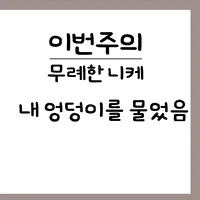

니체 중산층 가정에서 20대에 교수되어서 예술계에서 놀던 그 누구보다 잘나가던 사람이였는데 뭔소리냐 대체
↳ 답글 · ㅇㅇ · 11.23 22:47:01
사람들이 많이들 부정하는데
음악 미술 철학 다 수학 과학처럼 적성이 있는 분야임
이쪽에 뇌구조 안 타고나면 이해 잘 못하고
예술가, 철학자들이 말장난하며 사람들에게 사기치려고 입 터는 사람들이라 생각함
↳ 답글 · ㅇㅇ · 11.23 22:50:50
그리고 영미권 실용주의 기질 타고난 애들이 대체로 철학 경시하고 이해 잘 못함
그쪽분들이 만든 그분들 입맛에 맞는 철학이 또 있긴한데
독일 프랑스애들이랑은 확실히 사고방식 달라
그래서 유럽철학 좋아하는 애들은 영미권 대중문화랑 잘 안 맞음
↳ 답글 · ㅇㅇ · 11.23 22:59:58
이런데도 포스트모더니즘 책 몇권 읽고 와서 포스트모더니즘에 반박하는 글 쓰는 애들 종종 보이는데
그냥 글 읽어보면 포스트모더니즘을 대부분 이해 못해서 비판하는거임....
근데 이것도 철학적인 사고에 어느정도 적성이 있는 애나 알 수 있다는거지
↳ 답글 · ㅇㅇ · 11.23 23:15:35
@ㅇㅇ(106.101) 뭐 조던피터슨 같은 애들 보고 와서는 포스트 모더니즘이라는 현대 철학에서 빠질 수 없는 철학이 개병신 좌파 철학인줄 아는거지.
너말대로 지성OE가 감성, 상상력OE와 맞물려서 실제로 여러 모순과 충돌할때 생기는 영역이라
철학이 적성이긴 매우 쉽지 않다고 봄.2차적 반성적 사고등이 쉽지도 않고. - dc App
↳ 답글 · ㅇㅇ · 11.23 23:38:27
굳이 니체 까고 자빠진 애들은 걍 니체에 긁힌애들임
↳ 답글 · ㅁㄴㅇㄹ · 11.24 11:32:47
극한의 불행한 환경인지는 몰랐지만, 그걸 넘어서 그가 전하는 메시지 자체가 궤가 다름
ㅇㅇ · 11.23 22:22:14
니체 조현병 걸렸잖아
ㅇㅇ · 11.23 22:23:59
니체 빠는애들 사회성 없는 새끼들
↳ 답글 · ㅁㄴㅇㄹ · 11.24 11:33:03
음 너 댓만봐도 그건 아닌 것 같네
ㅇㅇ · 11.23 22:24:14
예아 안될거 뭐있노
ㅇㅇ · 11.23 22:24:31
개독 발작
니체
↳ 답글 · ㅇㅇ · 11.23 22:24:50
↳ 답글 · ㅇㅇ · 11.23 22:28:57
발작할게 머 있노 ㅋㅋ
동시대 개독 과학자들은 열역학, 전자기학, 생물학에 이바지할 동안 혼자 조현병 걸려서 디진놈인데
@ㅇㅇ(218.153) 계집들의 수동공격과 직접 왕이 될 생각이 없고 여론을 통해 통제하고 평판을 공격하는 방식에 대해서 니체는 여성은 누군가를 가르칠수가 없다고 까지 말함 - dc App
↳ 답글 · ㅇㅇ · 11.24 19:01:16
ㅇㅇ · 11.23 22:40:25
철학 심리학은 서양이 완벽하게 다 해놔서 철학 심리학이 없든 똥양이 할게 없음..똥양에 철학자가 안나오는 이유..
ㅇㅇ · 11.23 22:44:00
진여심. 몸도 마음도 사실 나의 실체가 아니라는 걸 깨달으려면 불교스타일로 수행을 하든가 아님 기독교 스타일로 맹신을 해야 함(원효대사 정토사상 스타일).. 근데 과학과 계몽주의로 그동안 믿어오던 기독교적 신화가 말이 안된다는 건 알게 됐는데, 서양에는 스스로 깨닫는 불교적 전통이 없었기 때문에 위버멘시를 얘기한 거지. 신이 없대 에베베 이런 게 아님.
↳ 답글 · ㅇㅇ · 11.23 22:46:58
니체가 신은 죽었다고 말하는건 기독교적 신만을 말한게 아님 과학도 종교처럼 믿거나 돈을 종교처럼 윤리를 종교처럼 믿거나 그런것을 이야기함 니체가 지금 살았으면 수능이나 공정을 종교처럼 믿는 사람들을 비웃고 오히려 치팅한 사람들을 긍정했을꺼임 - dc App
↳ 답글 · ㅇㅇ · 11.23 22:57:15
원효는 섹스다
ㅇㅇ · 11.23 22:46:38
다크찐따 = 쇼펜하우어
화이트찐따 = 니체
군갤독뽕찐따 = 하이데거
찐따처럼 생긴 인싸 = 사르트르
히피찐따 = 미셸 푸코
↳ 답글 · ㅇㅇ · 11.23 22:47:00
↳ 답글 · ㅇㅇ · 11.23 22:55:34
페미 퐁퐁남 = 사르트르
ㅇㅇ · 11.23 22:50:04
뱀의 머리가 낫지
어린이사랑 · 11.23 22:57:29
ㅇㅇ · 11.23 23:00:25
니체 이거 쿨찐이네
↳ 답글 · 풀러리 · 11.24 00:08:21
대구박응식36냥이 · 11.24 00:22:05
통찰력이 남다르노
몇가지는 생각못해본것들이네
ㅇㅇ · 11.24 00:24:24
니체는 하루 3딸의 딸쟁이였다
ㅇㅇ · 11.24 00:34:32
니체가 한말이 맞긴해? 요새 인터넷에 워낙 허위정보가 많아서
↳ 답글 · ㅇㅇ · 11.24 00:58:28
대충봐도 아닌듯.
↳ 답글 · ㅁㄴㅇㄹ · 11.24 11:36:47
ㅋㅋㅋㅋ맞다고 한들 맥락에서 발췌해온 거랑 그냥 저렇게 덩그러니 두는 거랑 궤가 다름 니체 글은 크게 놓고 봐야 이해가 되는데 저렇게 떼오는 건 대부분 한녀거나 한녀같은 한남밖에 없음
ㅇㅇ · 11.24 00:47:10
⠀⠀⠀⣠⣤⣴⣶⣶⣶⣶⣤
⠀⠀⣼⣿⣿⣿⣿⣿⣿⣿⣿⣿⣧ AA cup
⠀⢸⣿⡟⣿⣿⣿⣿⣿⣿⣿⣿⣿ OLD UGLY NASTY KOREAN FEMCEL
⠀⣼⡿⠀⠀⠈⢿⣿⣿⣿⣿⣿⣿⡇NO JOBS 72% TRASH HOUSE 80-90%
⠀⣿⡧⡬⢉⣩⣥⣤⢬⢍⡩⡄⣿⡇DEFORMED BABIES 30% OVER
. ⣿⡇⠡⢀⣀⠝⠈⠆⣀⡀⠃⣿⣧ 아줌마 줌들줌들
. ⣿⣿⠀⠀.⠐⠓⠐⠂⠀⠀ ⢠⣿ 패배한 줌태악귀
⣿⣿⣿: ⠀⠐⠲⠾⠖⠀⠀ ⣿⣿⣿
↳ 답글 · ㅇㅇ · 11.24 02:03:26
P
ㅇㅇ · 11.24 01:23:50
니체가 난놈이라고 생각한게
자기가 모든 힘을 다해 써낸, 앞으로 인류역사를 바꿀거라고 생각한 책이 인기를 못끌자 한일
->아 병신저능아들이 내 위대한 철학을 이해못해? 좀더 쉽게 다시 써준다 ㅅㄱ
그리고 그 다시 쉽게쓴 책이 대박쳐서 유명해짐
천재긴 함 ㅇㅇ
ㅇㅇ · 11.24 01:46:50
내 인생 최악의 책이 짜라투스투라는 이렇게 말했다 이거
히틀러 나의 투쟁이랑 같이 읽었는데 히틀러가 더 수준이 높았음
나의 투쟁은 여기 인터넷 실붕이들 수준의 내용임
니체는 인간 주제에 예수를 뛰어넘으려고 했음 그게 너무 어설퍼서 내게 충격을 안김
예수 뛰어넘으려고 하면서 예수 흉내를 냈거든
이 어설픔이 사람을 미치게 하더라구 불쾌한 골짜기처럼
↳ 답글 · ㅇㅇ · 11.24 04:02:29
예수따위가 뭐라고? ㅋㅋ
환란 전 교회 휴거 · 11.24 02:01:35
모든 인간은 죄 본성에 대한 심판으로 지옥에 갈 수 밖에 없지만 선을 추구하는 "양심"이 있는 자, 그 인류 죗값을 위해 주 예수 그리스도께서 보혈을 흘리시고 부활하신 사실을 "믿는"다면 구원받게 된다 더 나아가 현재 휴거 임박 시점에 선을 추구하는 "양심"이 있는 자, 이 복음을 "믿는"다면 곧 닥칠 7년 환란과 죽음을 면하고 살아서 천국에 직행하게 된다
ㅇㅇ · 11.24 02:03:30
여자 처녀막+몸무게+나이 = 남자 키
ㅇㅇ · 11.24 02:03:34
중고 쿵쾅이 아줌마 = 난쟁이
ㅇㅇ · 11.24 02:46:11
니체게이 좀 치노
ㅇㅇ · 11.24 03:32:01
병신같은 소리도 많이 하긴함 ㅋㅋㅋ
ㅇㅇ · 11.24 04:48:27
승리의여신 니케 어디갔냐?
ㅇㅇ · 11.24 04:54:26
니체도 지금 태어났으면 백수 문과충으로 디씨 음지 갤에서 하루종일 개똥글만 싸고 있었겠지
↳ 답글 · ㅇㅇ · 11.24 04:54:49
지금 태어났으면 그냥 음침한 이상한 소리하는 개병신 새끼잖아
ㅇㅇ · 11.24 06:44:49
이런 글귀가 필요없는새끼만 이런거보고 필요한새끼는 보지도 않고 우연찮게 보더라도 지 얘긴줄 모름
ㅇㅇ · 11.24 08:13:11
그래서 노벨상 몇개노 이새낀
멘탈소진 · 11.24 08:29:23
ㅇㅇ · 11.24 09:11:27
나체 ㅇㄷ?
ㅇㅇ · 11.24 10:24:17
니체는 유명한 아이돌임
ㅇㅇㅇ · 11.24 11:49:16
뛰어난 사람들은 글에서 무얼 배울까 생각하고, 인생 망한 애들은 무엇을 깔까 생각한다~
ㅇㅇ · 11.24 11:54:13
걍 개씨발 피싸개년이 망상 싸지른글이노 ㅋㅋ - dc App
삼다수통제조사 · 11.21 09:11:38
니체에 점하나를 찍으면 나체가 된다
이것은 어떤 의미일까?
↳ 답글 · KHAN · 11.21 09:12:57
알부자 · 11.21 09:13:24
나체로 보고왔다
산와머니 · 11.21 09:13:51
나체 ㅇㄷ?
윾희왕딱지가딱좋아 · 11.21 09:17:53
니체새끼가 하는 말 보면 세상엔 인정많고 좋은 사람이라는 것이 아예 존재하지 않는다는 인상을 받는다.
내가 아주 강하게 주장하는건데, 니체 개새끼였을거다. 좆같이구는 씹새끼였겠지. 좋은 의도도 지혼자 곡해하고 자기 위하는 사람도 쫒아내는 상병신이었을거다.
이새끼 글은 읽으면 읽을 수록 냉소적인 사고 밖에 안생기는데, 냉소적인 사고는 삶을 사는데있어 목 늘어나서 신발안에서 벗겨지는 양말만큼이나 쓸모가 없다.
그래서 나는 니체를 읽는 새끼를 병신으로 보는데 그냥 병신도 아니고 자기가 병신임을 뒤질때까지 인지 못하는 개병신새끼로 본다.
철학자 프리드리히 니체는 1889년 1월 이탈리아 토리노에서 갑작스러운 정신적 붕괴를 겪은 뒤, 1900년 사망할 때까지 약 11년간 정상적인 정신 활동을 하지 못한 채 투병했습니다. 정확한 의학적 원인은 아직 확정되지 않았으며 여러 가설이 제기되어 왔습니다.
↳ 답글 · ㅇㅇ · 11.23 22:16:38
니체는 1882년, 친구 파울 레(Paul Rée)의 소개로 만난 지성인 루 살로메(Lou Salomé)에게 깊이 빠져 청혼했으나 거절당했습니다. 당시 세 사람은 파울 레와 함께 지적인 공동체를 꾸리며 특별한 관계를 유지했지만, 결국 살로메와 레가 니체를 떠나면서 그는 극심한 배신감과 고독을 겪어야 했습니다.
↳ 답글 · ㅇㅇ · 11.23 22:17:09
《차라투스트라는 이렇게 말했다》의 탄생: 실연의 고통을 이겨내기 위해 이탈리아 라팔로로 떠난 니체는 단 열흘 만에 이 책의 1부를 집필했습니다. 실연으로 인한 절망을 인간 내면의 초극과 삶의 긍정으로 승화시킨 결과물이었습니다.
↳ 답글 · ㅇㅇ · 11.23 22:17:43
니체 철학 = 정신승리
니체 빠는 인간들 = 힙스터 병에 걸린 인간들
↳ 답글 · ㅇㅇ · 11.23 22:22:45
@ㅇㅇ(59.14) 제임스 클러크 맥스웰 (1831~1879)
독실한 스코틀랜드 장로교 신자였습니다. 니체가 우주를 목적이 없는 혼돈과 힘의 투쟁으로 보았다면, 맥스웰은 우주에 존재하는 완벽한 수학적·물리적 법칙이야말로 창조주(신)의 지성과 설계를 보여주는 증거라고 믿었습니다.
↳ 답글 · ㅇㅇ · 11.23 22:23:02
@ㅇㅇ(59.14) 마이클 패러데이 (1791~1867)
엄격한 기독교 분파인 '샌드먼파(Sandemanian)'의 장로로 평생 헌신했습니다. 패러데이에게 자연과학 연구는 신이 창조한 세계의 질서를 읽어내는 일종의 예배와 같았으며, 과학과 신앙이 결코 충돌하지 않는다고 보았습니다.
↳ 답글 · ㅇㅇ · 11.23 22:23:20
@ㅇㅇ(59.14) 그레고어 멘델 (1822~1884)
가톨릭 사제이자 수도원장이었습니다. 니체가 수도원적 금욕주의와 기독교 도덕을 '노예 도덕'이라며 강하게 비판할 때, 멘델은 실제로 수도원 정원에서 신의 창조 질서인 생명의 유전 법칙을 묵묵히 탐구하고 있었습니다.
↳ 답글 · ㅇㅇ · 11.23 22:24:00
@ㅇㅇ(59.14) 루이 파스퇴르 (1822~1895)
독실한 가톨릭 신자였습니다. 파스퇴르는 "조금의 과학은 사람을 신에게서 멀어지게 하지만, 깊은 과학은 사람을 다시 신에게로 돌아오게 한다"라는 유명한 말을 남겼습니다. 이는 과학의 발전을 신의 죽음과 연결 지은 니체와 정반대의 태도를 보여줍니다.
↳ 답글 · ㅇㅇ · 11.23 22:26:19
@ㅇㅇ(59.14) 니체가 정신병 걸려서 씹소리 하고 있을 때
종교있는 과학자들은 묵묵히 자인류발전에 이바지함
↳ 답글 · ㅇㅇ · 11.23 22:27:22
@ㅇㅇ(59.14) 제임스 프레스콧 줄 (1818~1889)
독실한 기독교 신자였습니다. 흥미롭게도 니체는 에너지 보존 법칙에서 '영원회귀'라는 무신론적 순환 우주론의 영감을 얻었지만, 정작 이 법칙을 입증한 줄은 "우주의 에너지는 오직 창조주인 신만이 생성하거나 소멸시킬 수 있으며, 자연법칙은 신의 의지를 반영한다"고 믿었습니다.
↳ 답글 · ㅇㅇ · 11.23 23:01:57
@ㅇㅇ(59.14) 와우 어떻게 니체가 말한 최후의 인간의 표본 그자체의 댓글이. - dc App
↳ 답글 · ㅇㅇ · 11.23 23:11:16
@ㅇㅇ(59.14) 니체가 단순한 무신론자라니.
니체는 예수를 부정한적 없다.
오히려 경외했지.
신은 죽었다 한 문장으로 니체를 마치 악마라도 된듯 생각하는 기독교인 같은데 ai에 본인 생각을 맡겨버리지 좀 마라. - dc App
댓글
수집 당시 댓글 137개
· ㅇㅇ · 11.23 22:40:42
· ㅇㅇ · 11.23 22:47:01
· ㅇㅇ · 11.23 22:50:50
· ㅇㅇ · 11.23 22:59:58
· ㅇㅇ · 11.23 23:15:35
· ㅇㅇ · 11.23 23:38:27
· ㅁㄴㅇㄹ · 11.24 11:32:47
ㅇㅇ · 11.23 22:22:14
ㅇㅇ · 11.23 22:23:59
· ㅁㄴㅇㄹ · 11.24 11:33:03
ㅇㅇ · 11.23 22:24:14
ㅇㅇ · 11.23 22:24:31
개독
발작
니체
· ㅇㅇ · 11.23 22:24:50
· ㅇㅇ · 11.23 22:28:57
· ㅇㅇ · 11.23 22:32:53
· ㅇㅇ · 11.23 22:37:18
· ㅇㅇ · 11.23 22:38:30
· ㅇㅇ · 11.23 22:44:15
· ㅇㅇ · 11.23 22:45:01
· ㅇㅇ · 11.23 22:45:41
· ㅇㅇ · 11.23 22:47:41
· ㅇㅇ · 11.23 22:48:19
· ㅇㅇ · 11.23 22:50:00
· ㅇㅇ · 11.23 22:50:05
· ㅇㅇ · 11.23 22:53:53
· ㅇㅇ · 11.23 22:54:52
· ㅇㅇ · 11.23 22:55:39
· ㅇㅇ · 11.23 22:56:09
· ㅇㅇ · 11.23 22:59:47
· 미수 · 11.23 23:00:47
· ㅇㅇ · 11.23 23:01:04
· ㅇㅇ · 11.23 23:02:54
· ㅇㅇ · 11.23 23:03:39
· ㅇㅇ · 11.23 23:30:14
Cyclic · 11.23 22:24:34
ㅇㅇ · 11.23 22:24:37
ㅇㅇ · 11.23 22:24:59
· ㅇㅇ · 11.23 22:25:27
· ㅇㅇ · 11.23 22:27:24
ㅇㅇ · 11.23 22:25:29
ㅇㅇ · 11.23 22:26:01
ㅇㅇ · 11.23 22:28:28
· ㅇㅇ · 11.23 22:28:41
· ㅇㅇ · 11.23 22:29:01
· ㅇㅇ · 11.23 22:29:16
· ㅇㅇ · 11.23 22:42:51
ㅇㅇ · 11.23 22:29:11
· ㅇㅇ · 11.23 22:29:19
· ㅇㅇ · 11.23 22:29:47
· ㅇㅇ · 11.23 22:36:59
ㅇㅇ · 11.23 22:29:28
ㅇㅇ · 11.23 22:29:50
ㅇㅇ · 11.23 22:31:44
· ㅇㅇ · 11.23 22:33:36
증거를친일천주새끼들 · 11.23 22:33:52
ㅇㅇ · 11.23 22:34:33
· ㅇㅇ · 11.23 22:34:40
ㅇㅇ · 11.23 22:36:07
ㅇㅇ · 11.23 22:36:38
· ㅇㅇ · 11.23 22:37:53
· ㅇㅇ · 11.23 22:40:00
· ㅇㅇ · 11.23 22:41:37
· ㅇㅇ · 11.23 22:42:57
· ㅇㅇ · 11.24 19:01:16
ㅇㅇ · 11.23 22:40:25
ㅇㅇ · 11.23 22:44:00
· ㅇㅇ · 11.23 22:46:58
· ㅇㅇ · 11.23 22:57:15
ㅇㅇ · 11.23 22:46:38
· ㅇㅇ · 11.23 22:47:00
· ㅇㅇ · 11.23 22:55:34
ㅇㅇ · 11.23 22:50:04
어린이사랑 · 11.23 22:57:29
ㅇㅇ · 11.23 23:00:25
· 풀러리 · 11.24 00:08:21
대구박응식36냥이 · 11.24 00:22:05
ㅇㅇ · 11.24 00:24:24
ㅇㅇ · 11.24 00:34:32
· ㅇㅇ · 11.24 00:58:28
· ㅁㄴㅇㄹ · 11.24 11:36:47
ㅇㅇ · 11.24 00:47:10
· ㅇㅇ · 11.24 02:03:26
ㅇㅇ · 11.24 01:23:50
ㅇㅇ · 11.24 01:46:50
· ㅇㅇ · 11.24 04:02:29
환란 전 교회 휴거 · 11.24 02:01:35
ㅇㅇ · 11.24 02:03:30
ㅇㅇ · 11.24 02:03:34
ㅇㅇ · 11.24 02:46:11
ㅇㅇ · 11.24 03:32:01
ㅇㅇ · 11.24 04:48:27
ㅇㅇ · 11.24 04:54:26
· ㅇㅇ · 11.24 04:54:49
ㅇㅇ · 11.24 06:44:49
ㅇㅇ · 11.24 08:13:11
멘탈소진 · 11.24 08:29:23
ㅇㅇ · 11.24 09:11:27
ㅇㅇ · 11.24 10:24:17
ㅇㅇㅇ · 11.24 11:49:16
ㅇㅇ · 11.24 11:54:13
삼다수통제조사 · 11.21 09:11:38
· KHAN · 11.21 09:12:57
알부자 · 11.21 09:13:24
산와머니 · 11.21 09:13:51
윾희왕딱지가딱좋아 · 11.21 09:17:53
· ㅇㅇ · 11.21 09:22:24
· 알렉스 · 11.21 09:34:38
· ㅇㅇ · 11.21 09:34:57
· ㅇㅇ1557 · 11.21 09:43:44
· 미수 · 11.23 23:01:42
· ㅇㅇ · 11.23 23:17:47
· ㅇㅇ · 11.23 23:25:00
ㅇㅇ · 11.21 09:21:27
국제숏컷톰보이학회장 · 11.21 09:32:47
암타황제강시현 · 11.23 22:10:21

ㅇㅇ · 11.23 22:11:03
ㅇㅇ · 11.23 22:12:13
ㅇㅇ · 11.23 22:14:37
ㅇㅇ · 11.23 22:15:40
ㅇㅇ · 11.23 22:16:06
· ㅇㅇ · 11.23 22:16:38
· ㅇㅇ · 11.23 22:17:09
· ㅇㅇ · 11.23 22:17:43
· ㅇㅇ · 11.23 22:22:45
· ㅇㅇ · 11.23 22:23:02
· ㅇㅇ · 11.23 22:23:20
· ㅇㅇ · 11.23 22:24:00
· ㅇㅇ · 11.23 22:26:19
· ㅇㅇ · 11.23 22:27:22
· ㅇㅇ · 11.23 23:01:57
· ㅇㅇ · 11.23 23:11:16
· ㅇㅇ · 11.24 00:13:05
· ㅇㅇ · 11.24 03:04:53
ㅇㅇ · 11.23 22:16:24
ㅇㅇ · 11.23 22:18:32
연락기다림 · 11.23 22:19:14
ㅇㅇ · 11.23 22:21:18